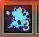
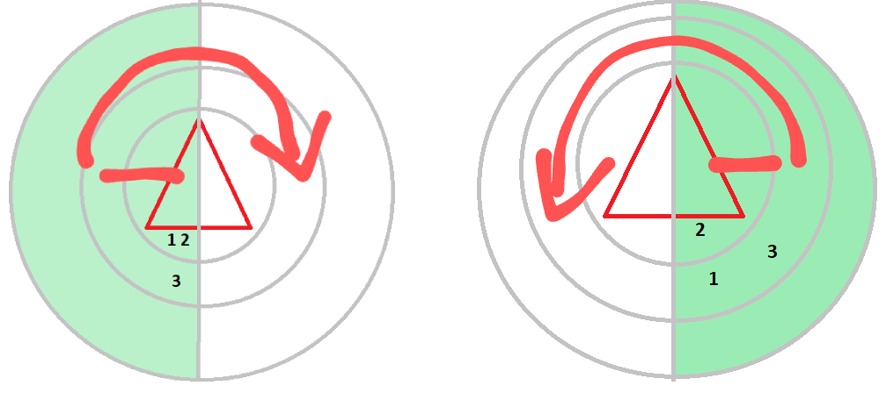
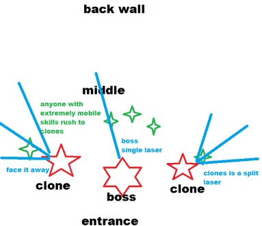

Tenacity / Dungeons / Cursed Antaroth Abyss
Dungeon is very simillar to AAH before, only few new mechanics were added.
Basic Attacks
Pushback on aggro
Use kaia or rally to prevent knockback
Slap and Pushback
Something new is he will slap the tank,and then swing his sword, both hits are blockable.
Now if the boss pauses and swings his sword around his body, this will push you back and apply a nasty bleed (cleanse).
In resonance beyond level 31 the boss can have a a bonus affix where he is not required to stun check, he will spin regardless at every opportunity.
Double Underhand Combos
If the boss does back to back underhand hits (1-2 followed by 1-2 again immediately) he will do one of two things now, either back stun or tank push.
If anyone is hit for a stun at any point in this fight, he will spin (dodge it).Stun is removable if the healer is fast enough and he wont count it.
95% Laser(s)
Starting at 95%, the boss can target a random person with 2 types of lasers.
● One laser the boss will slap you first then laser.
● One he will just laser immediately.
Heres an example of a raw laser, much faster timing. Blue circle under primary target.
The blue streak on the floor beneath the primary target is your tell to press iframe.
Front Stun into Back Stun
This mechanic is entirely random. Will trigger stun check if any remain
Jump Stun
Will jump on a random target and stun, spin checks if stun remains
Backstep into spin or front/back stun
Again completely random, the boss can backstep then do one of two attacks.Either he will do front/back stun or a spin
Stacking Slap Debuff
Something new is when the boss does the orb slaps, either on laser targets or just on the tank, he will gain a blue buff that stacks 4 times total.
Only when the orb/slap color is purple will it give a stack, if the orb/slap is blue no stack is added.
| Icon | Effect |
|---|---|
|  | Does an area-wide spin that applies bleeding and does damage when reaches 4stacks. |
When reaching 4, he will do a giant blue spin that does alot of damage, bleeds, and pushes back across the room.
90% Red Magic -70 second cd
Exactly the same as the old one, the boss will do a 4 stage attack:
● Stab
● Spin
● Half room AoE
● Donuts
There are a total of 5 donut pulses so iframe out once the 4th appears.
The spin will either be to the left or the right which determines the direction of the following steps.
● If the boss swings/spins to the left, go left
● If the boss swings/spins to the right, go right
This will make you safe from the 3rd attack, the half room aoe.Finally the donuts are also determined by the direction of his spin.
Right swipe:
Left swipe:
80% Circles and Gather -100 second cd
Boss will extend his left hand creating circles under every player that follow you.Once he clenches his left hand into a fist is when they will trigger, stunning anyone hit.
Iframe when he clenches his left hand into a fist and gather behind the boss. The tank must block and hold block for 6-7 pulses of damage.
75% Puddles -90 seconds ish cd
The boss will curl up and spawn puddles in the room. The only dangerous part of these puddles are the actual edges.
They expand and fade over time. Iframe over the edge or use a skill to QUICKLY move over it, otherwise youll die real fast. Ticks very rapidly.
70% Orb Mechanic -(2 minute 30? cd)
The biggest changed mechanic from the old version.The boss will teleport to the center of the room and his sword will glow a certain color, either red or blue. This determines the floor color for the rest of the mechanic.
The bosses sword is in his right hand:
● Glowing RED -> The left side of the boss will be red colored, the right side colored blue.
● Glowing Blue -> The left side of the boss will be blue, the right side will be red.
Sword color = opposite side color for short.
To make this mechanic extra annoying, any remaining orbs will then buff the boss resistance in certain ways:
● Each blue orb will increase magic resist by +10k and reduce phys resist by -5k
● Each red orb will increase phys resist by +10k and reduce magic resist by -5k
There are many ways to deal with this depending on group composition.
Now anyone on each side will be given that color debuff,using above as an example, the people on the sword side will be given blue debuff, the arm side people will be given red.
8 Orbs will then spawn in a fixed position based on the boss.Determined by where hes facing
You will need to break one of these orbs to survive the aoe the boss is charging up.
Breaking the orb while standing near it will give you an immune shield for 3 seconds, gotta time it with the boss attack.
Timing this is really easy when viewing the bosses attack on the floor. Red runes will be begin appearing on the floor, thats your queue to break an orb.

60% Purple Magic
The Red magic mechanic will change into this at 60% and he will do it immediately at 60%.The difference here is in the donuts at the end.
For the right side pattern:
For the left side pattern:

50% Timer and Clones
20 minute timer starts on boss (pointless), after which he will one shot everyone.He will teleport to mid and spawn to 2 clones.
He will then teleport to either the door of the dungeon or the back wall and his clones will follow on a slight delay.
If he teleports to the door, he will fire lasers and then his clones will do the same, targetting the closest person to them.
The clones lasers will split into a 3 way pattern so you need to angle them towards the outside wall.
If the boss teleports to the back wall, he and the clones will instead spin.
All the lasers and all the spins are iframeable
The boss will then give himself 3 different color buffs (instead of players like the old one) and you must remove all 3 buffs from the boss before the cage completes its 3rd rotation.
For example the boss can spawn with 8 red, 1 yellow, 1 blue:
● If all 5 people stand in the red slice for the first hit, it will make it have 3 red, 1 yellow, 1 blue.
Likewise if you stand in a color after it has been removed, it will be re-added to the boss.
If all that remains is 2 blue and nothing else, either stand in blue or stand in white (nothing)
40% Cage
Finally at 40% the boss will teleport to the middle, greatly slowing everyone (healer cleanse this) and put a cage up.
Mana Drain - 2 min ish cd
2 minutes into combat and then roughly every 2 minutes again, the boss will do a mana drain hitting the entire room. Healers can dispell this instantly.
Likewise all the bosses special abilities will give you a debuff that is a number, the more you get hit, the higher the number, ranging from 1-5.
This number will make you take increased damage, stacking higher the more you get hit.
When the boss casts the mana drain, you will take bonus damage based on if you have a number debuff and how high it is.
If you have no number, you will take zero damage but if you have 5 expect to get one shot or nearly one shot from the mana drain.